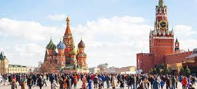
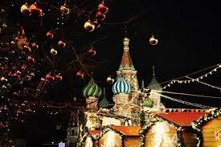

Place Rouge!
Presentation
La place Rouge (en russe : Красная площадь, Krasnaïa plochtchad) est une place de Moscou, dont elle marque le centre, elle est la plus célèbre. Elle est bordée à l'ouest par le Kremlin, à l'est par Kitaï-gorod ; la cathédrale Basile-le-Bienheureux est située au sud de la place. Situé au cœur de la ville, elle mesure 330 mètres de long et 70 mètres de large (23 100 mètres carrés de surface). En 1990, la Place Rouge et le Kremlin ont été déclarés au patrimoine mondial de l’UNESCO. Place des cathédrales En plus de l’Armurerie, à l’intérieur des murs du Kremlin, vous pouvez également visiter quatre belles cathédrales situées dans la dénommée Place des Cathédrales, célèbre pour être le lieu du couronnement et des processions funèbres de tous les tsars russes. Aujourd’hui encore, il est utilisé lors de la cérémonie d’investiture du Président de la Russie.
Jardins d’Alexandre et la tombe du soldat inconnu
La partie Est du Kremlin longe la Place Rouge, mais l’entrée du Kremlin ne passe pas par la Place Rouge, mais par la partie Ouest, où se trouvent les Jardin d’Alexandre, l’un des premiers parcs publics de Moscou, dont l’entrée principale abrite la Tombe du Soldat inconnu, un monument dédié aux soldats soviétiques morts pendant la Deuxième Guerre mondiale, au centre duquel brûle la flamme éternelle, sous la garde d’honneur du Régiment Présidentiel. Le changement de garde a lieu toutes les heures, moment où de nombreux touristes viennent voir la parade. L’accès au Jardin d’Alexandre est gratuit.


Conseil!
Je vous recommande de visiter aussi la Place Rouge la nuit pour voir son bel éclairage. De plus, si vous visitez la Place Rouge à Noël ou entre le 30 novembre et le 28 février, vous pourrez profiter de sa patinoire. Dans tous les cas, pour connaître les activités prévues à Moscou (et sur la Place Rouge ) à tout moment de l’année, il est préférable de visiter le site de la Mairie de Moscou.
